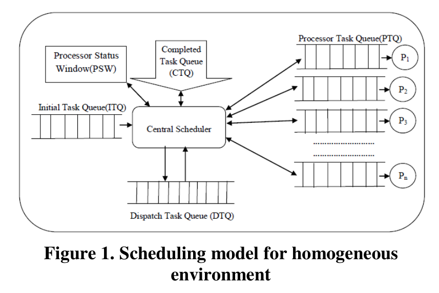
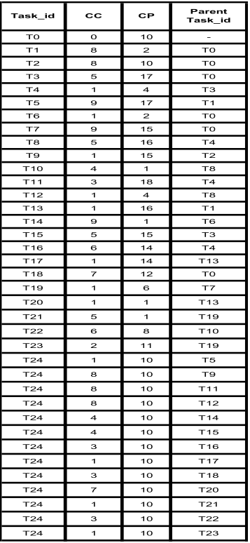
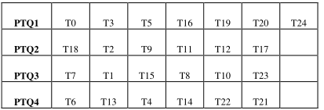
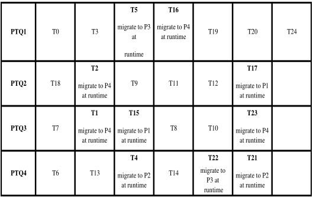
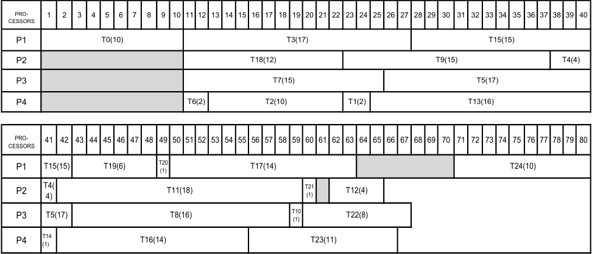

论文简介
《A new DAG based dynamic task scheduling algorithm (DYTAS) for multiprocessor systems》
论文提出一种基于有向无环图（DAG）的动态任务调度算法。关注点主要是通过多处理系统，进行并行处理任务。主要关注点在于多处理器系统，并行。在多处理器系统中实现高性能是调度并行任务的关键因素。而动态任务调度的目标是将并行任务映射到多处理器上，并对执行顺序进行排序。
本文旨在建立一个基于DAGs的动态调度模型。在该模型中，一个被分配的处理器称为中心调度器，负责动态地调度任务。在提出的动态调度模型的基础上，提出了一种新的动态调度算法。该算法在仿真环境下进行了实验，实验结果表明，所提出的调度算法是一种有效的动态调度算法，具有更好的性能。
我们常说的对于有向无环图最短执行时间的拓扑排序算法是在单处理器上进行运行的，任务是按照排序好的序列进行执行。
DAG介绍
有向无环图(DAG) G = (V, E)，其中V是v个节点/顶点的集合，E是e个有向边的集合。边缘的源节点称为父节点，而汇聚节点称为子节点。没有父节点的节点称为入口节点，没有子节点的节点称为出口节点。
相关工作
很多动态调度算法是为了支持实时系统进行设计的。实时系统是指系统的性能不仅取决与逻辑计算结果，而且还取决于结果产生的时间。
调度算法分为静态调度算法和动态调度算法。
- 静态调度算法：任务的分配是离线进行的，即在实时任务正式在处理机上调度执行前，先把任务在处理机上的分配和调度时间安排好,在任务正式开始执行后按照预先的调度方案执行。这种调度方法主要用于周期任务的调度，它的优点在于能够预先安排好调动，减少任务调度过程中的开销;而缺点在于缺乏灵活性，在实际的调度中不能够及时地根据系统资源和任务的执行情况进行及时的调整。
- 动态调度算法：在实时系统中，很多任务并非都以周期方式在处理机上进行调度，更多任务，特别是非周期任务都是随机到达系统并动态调度执行的。在动态调度方法中，任务的分派和可调度性测试都是在系统运行时在线进行的。这种情况下，可调度性测试实际上变成了一种接受测试(acceptance test), 测试动态到达任务的截止期是否会被保证，如果无法保证任务的截止期，任务将被拒绝调度。可以看出，动态调度与静态调度相比有更好的灵活性，然后由于可调度性测试需要在线进行，它的调度算法的复杂度不能太高，并且由 于无法保证是否可以被调度，算法的可预测性(predictability)很差。也就是说动态调度算法主要算法是在线测试预估任务是否可以满足。
系统模型
负载模型
并行任务采用DAG建模。非实时DAG[7]定义为：G=（V，E），其中V是一组v个节点，E是一组w条有向边。DAG中的一个节点表示一个任务，而这个任务又是一组指令，这些指令必须在同一个处理器中顺序执行而不被抢占。节点ni的权重称为计算成本，用w（vi）表示。DAG中的边，每个边用（vi，vj）表示，对应于节点之间的通信消息和优先约束。边的权重称为边的通信开销，用c（vi，vj）表示。
我们的系统看作有一组处理器组成，P={P1，P2，P3，…Pm}，其中Pi表示具有本地存储器的处理器。处理器之间是也是具有通信开销的。
调度器模型
如下图所示，描述的是一个同构环境中一个新的非实时调度器模型。当所有并行任务到达一个被指定的中央调度器时，他将进入一个称为初始任务队列（ITQ）的队列，等待被调度；除了ITQ之外，还管理着两个队列：调度任务队列（DTQ）和完成任务队列（CTQ）。封装在调度器中的调度算法开始与ITQ一起工作。中央调度器负责调度DTQ中的每个就绪任务。一旦调度算法启动，所有的任务都会根据其依赖的任务进行安排。在安排任务之后，调度器将任务安排到单个处理器任务队列（PTQ）。处理器将在自己的PTQ中通过同时检查CTQ中的依赖任务结果来完成任务。如果CTQ没有利用其相关任务的结果，则PTQi应指向下一个PTQi+1、PTQi+2、…PTQn、PTQ1、…PTQi-1以确定合适的任务，并将该任务迁移到PTQi。在PTQi变空之前，调度算法应停止工作。Processor Status Window（PSW）显示处于运行状态和空闲状态的每个处理器的状态。

动态调度算法-DYTAS
基于上述的调度模型，提出了一种新的动态调度算法。ITQ中的任务是通过依赖关系进行调度的。该算法首先对于ITQ中的前面的任务进行调度，并将其映射到处理器上。而在静态调度算法中，由于DAG的数据是预先知道的，所以任务是按一定的优先级排序的。但是，本文提出的动态调度算法不同于静态调度算法，它在运行时迁移任务。
DYTAS算法的核心是处理器的选择策略，也就是对于任务的迁徙。主要取决于如何选择任务映射到的处理器，即使任务被调度得更早。
当从PTQ集合中中选择处理器来执行特定任务时，必须考虑两个时间索引：
- 处理器Pi的最早空闲时间
- 处理器Pi上任务vi的最早开始时间。
在所提出的调度模型中，ITQ中的并行任务和就绪任务都在处理器的PTQ中。即使ITQ和DTQ位于中央调度器上，实际执行映射任务的处理器也与调度器分离并放置在PTQi处。同时，调度过程和执行过程是并行的。因此，调度器和工作处理器之间是同步的。
该论文算法有点问题，没有讲清楚部分参数的含义。给出的cc参数不知道是什么意思。不知道为啥引用还那么多。
算法简单解释
|
|
实验
实验数据
cp是任务执行时间，cc不清楚是什么，也没说。

经过拓扑排序之后，装配在ptq中的任务仿真图。拓扑排序结果是有很多种结果的。但是不影响算法运行。

！！！重要的运行时间迁移任务

结果展示，单处理器中的调度长度是240个时间单位。在第一个处理器（P1）中完成任务所用的时间是80个时间单位，P2是65个时间单位，P3是67个时间单位，P4是66个时间单位。

！！！论文意义不是很大，不清楚为什么那么多引用这篇文章的。
每日一题
你有一个带有四个圆形拨轮的转盘锁。每个拨轮都有10个数字： ‘0’, ‘1’, ‘2’, ‘3’, ‘4’, ‘5’, ‘6’, ‘7’, ‘8’, ‘9’ 。每个拨轮可以自由旋转：例如把 ‘9’ 变为 ‘0’，‘0’ 变为 ‘9’ 。每次旋转都只能旋转一个拨轮的一位数字。
锁的初始数字为 ‘0000’ ，一个代表四个拨轮的数字的字符串。
列表 deadends 包含了一组死亡数字，一旦拨轮的数字和列表里的任何一个元素相同，这个锁将会被永久锁定，无法再被旋转。
字符串 target 代表可以解锁的数字，你需要给出解锁需要的最小旋转次数，如果无论如何不能解锁，返回 -1 。
题目中问的是最小拨动次数，对应图中两者之间的最短路径，所以这种类型的题大多都广度优先搜索，因为有四个位置，并且每次拨动都有两种选择。而对于已经搜索过的图将不会再次搜索。对于每次的字符串他的下一个变化的字符串有八个。
|
|